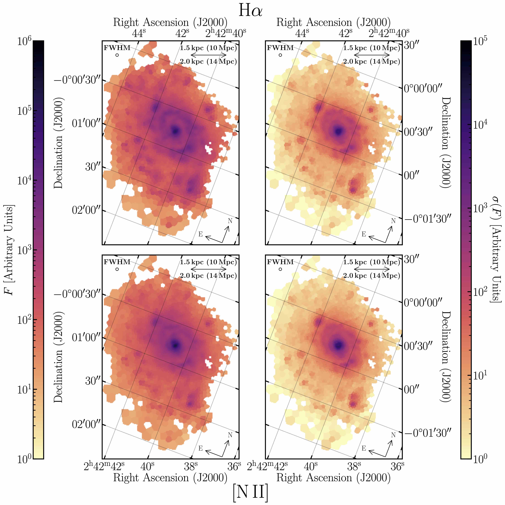

Astronomy Research
Postdoctoral Researcher at Max-Planck Institute for Astronomy — Data Science Group

LRDs & AGN
When supermassive black holes at the centers of galaxies accrete material, they release a huge amount of energy across the entire electromagnetic spectrum. I work on selecting Active Galactic Nuclei using their mid-infrared properties. The mid-IR is of particular interest as it has the potential to find obscured AGN, where the optical, ultraviolet, and potentially even X-ray signatures are hidden by intervening dust and gas.
Using data from the Wide-Infrared Space Explorer combined with optical spectroscopy from the Sloan Digital Sky Survey, I have undertaken systematic analysis to understand how optical spectroscopic quasars are distributed throughout mid-IR color space.
I published my results in my first author publication, A New Infrared Criterion for Selecting Active Galactic Nuclei to Lower Luminosities where I develop a new way to find AGN with WISE colors. This work follows along from my 2018 first author paper Characterizing the WISE-selected heavily obscured quasar population with optical spectroscopy from the Southern African Large Telescope which studied areas of WISE color space that we believed would host extremely obscured AGN.

In September 2023, I published a first-author paper on studying NGC 1068 using Fabry-Pérot Spectroscopy, mapping the impact of central AGN over the field of view. Learn More

Slitless Spectroscopy
Dropout Selection for JWST
At Steward Observatory I worked with the JWST NIRCam Extragalactic Science Team to prepare for the JADES GTO Survey. JWST allows us to robustly detect and collect statistics for galaxies present in the era when the universe was less than a billion years old.
Before the launch of JWST, I worked with the JAGUAR galaxy mock catalog. The presence of neutral hydrogen absorbs most of all the light bluewards of the Lyman Alpha line. As the rest frame position of this cutoff changes with redshift, searching for "LyA dropouts" is therefore a robust way of searching for high-redshift galaxies. I worked on calibrating potential color-color cuts for upcoming surveys with JWST and the numbers of high redshift galaxies that can be accurately recovered with this technique.
I was second author on Simulating JWST/NIRCam Color Selection of High-Redshift Galaxies, a work which aimed to be a tool for the community in designing surveys for finding high-redshift dropout galaxies using JWST.

LIERs at High Redshift
At the Space Telescope Science Institute I worked on finding Low-Ionization Emission Region (LIER) galaxies at higher redshifts (z~0.9). While LIER-like emission was believed to be constrained predominantly in the nucleus of galaxies (e.g. LINERs), spatially resolved spectroscopic studies have measured LIER-like emission out to kpc scales.
Using 3D-HST data analyzed by the Grizli library for space-based slitless spectroscopy, I determined 8 candidates with extended LIER emission. All 8 candidates showed evidence for kpc-scale ionization and show no evidence for the presence of an AGN, ruling out SMBH accretion as the driving source of the ionization.
I was lead author on a publication detailing these results, Spatially Extended Low Ionization Emission Regions (LIERs) at z∼0.9 which was the first work to identify LIER galaxies out to moderate redshifts.

Code Development
GELATO
GELATO (Galaxy/AGN Emission Line Analysis TOol) is my spectroscopic fitting code, a flexible framework for fitting emission lines with specific attention to the complex line profiles of AGN. GELATO was developed as part of my systematic analysis of AGN in mid-IR color space and has been used in multiple publications.